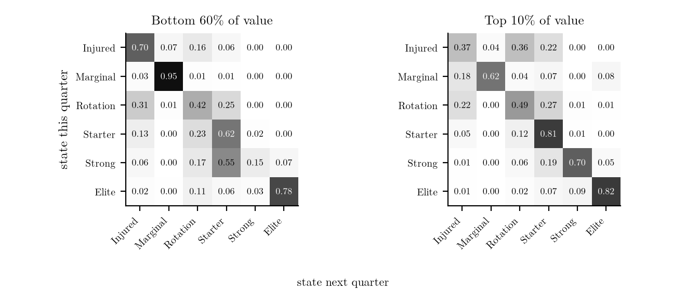
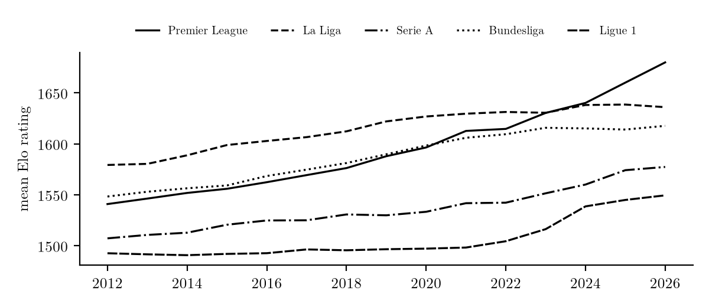
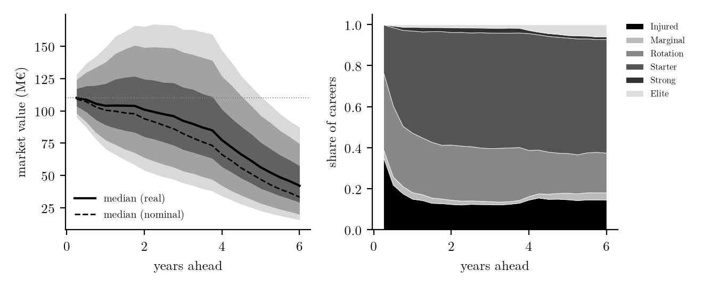
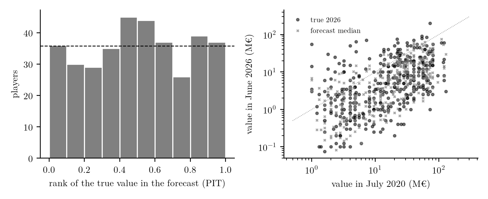

November 2026
A footballer’s market value is the outcome of a career that nobody can see in full: form comes and goes, injuries strike without warning, transfers move players between leagues of very different strength, and contracts run down. This paper builds a probabilistic model of that career. We first review Markov chains, hidden Markov models and the Monte Carlo method, proving the results we rely on. We then estimate a hidden Markov model in which each player occupies, every quarter of a season, one of six latent states (Injured, Marginal, Rotation, Starter, Strong, Elite), observed only through noisy signals: playing time, a context-adjusted performance index and injury absences. Transition probabilities depend on age, position and a talent tier. Combined with models of transfers, contracts, club strength and a dynamic valuation equation, the chain is simulated \(10\,000\) times over six years to produce a distribution of future market values. A genuine out-of-sample test, in which every model is re-estimated with data available in July 2020 and then compared with the true values of June 2026, shows how a naive simulation badly overestimates future values and how an empirical drift calibration repairs it.
In June 2025 Bukayo Saka was valued at 150 million euros. One year later, at 24 years old and seemingly entering the best years of his career, he was valued at 110 million. Nothing about his talent had changed. What had changed was a series of hamstring injuries that cost him a large part of the 2024/25 season. A few months into the 2026/27 season he was again absent from every Arsenal team sheet. Anyone trying to say what Saka will be worth in 2032 must therefore answer two questions at once: what is he really capable of, and what is going to happen to him?
The first question is about a quantity we cannot observe. We see minutes, goals, expected goals and absences, but these are noisy reflections of a player’s true level: a forward can have a bad quarter while remaining an elite forward. The second question is about randomness. Injuries, transfers, coaching changes and contract negotiations are, from the outside, random events whose probabilities we can estimate from thousands of past careers but whose realisation we cannot predict.
These two features point to two classical tools. Hidden Markov models (HMMs) describe a system that moves between unobserved states and emits noisy observations; they separate the signal (the latent level) from the noise (the quarter-to-quarter fluctuation). Monte Carlo simulation turns a model full of random events into a distribution of outcomes by sampling many possible futures. Rather than a single number, the model answers questions such as “what is the probability that this player is worth more than 100 million euros in 2030?”
The paper is organised as follows. Section 3 introduces Markov chains and proves the Chapman–Kolmogorov equations. Section 4 defines hidden Markov models and derives the forward–backward and Baum–Welch algorithms. Section 5 presents the Monte Carlo method and its error. Section 6 describes the data, including an Elo rating system for which we prove a conservation property. Section 7 assembles the full model, Section 8 presents the results and the out-of-sample validation, and Section 9 discusses the flaws of the model.
Three strands of literature meet in this project. The first concerns the age profile of footballers. Using performance ratings for the top European leagues, Dendir [6] finds that forwards peak around 25 and defenders around 27, with a marked decline near 29; later work reports that goalkeepers and centre-backs keep their level for longer. These findings motivate our age-dependent transition matrices, estimated separately by position group rather than imposed.
The second strand studies market values. Müller, Simons and Weinmann [7] estimate the market values of 4 217 players of the top five leagues with multilevel regressions on performance, popularity and player characteristics, and argue that data-driven estimates can match the accuracy of the Transfermarkt crowd while being transparent and easy to update. Coates and Parshakov [8] examine the crowd itself and show that Transfermarkt values, while closely related to transfer fees, are systematically biased for some groups of players, in particular in the largest leagues. Our valuation equations follow the first approach; the second reminds us that what we forecast is a crowd estimate, not a price.
The third strand is methodological. Hidden Markov models were introduced in the statistical literature by Baum and coauthors [1], and their estimation is a special case of the EM algorithm of Dempster, Laird and Rubin [2]; Rabiner’s tutorial [3] remains the standard introduction. On the measurement side, Davis and Robberechts [9] show that finishing skill is hard to separate from noise in expected-goals data, which supports building the performance index on shot quality and volume rather than on goals.
To our knowledge, combining these elements, a latent-state model of a career, event models for transfers and contracts, and a dynamic valuation equation, into a Monte Carlo forecast that is then validated out of sample over six years, is the contribution of this paper.
Throughout, \((\Omega,\mathcal{F},P)\) is a probability space and \(S=\{1,\dots,K\}\) a finite set of states. In our application \(K=6\) and the states are, in increasing order, Injured, Marginal, Rotation, Starter, Strong and Elite.
Definition 1. A discrete-time stochastic process with values in \(S\) is a sequence of random variables \((Z_t)_{t\ge 0}\), \(Z_t:\Omega\to S\). The index \(t\) is time; for us one unit of time is one quarter of a football season.
Definition 2. The process \((Z_t)\) is a Markov chain if for every \(t\ge 0\) and all states \(i_0,\dots,i_{t-1},i,j\), \[\begin{equation} \tag{3.1} P(Z_{t+1}=j \mid Z_t=i, Z_{t-1}=i_{t-1},\dots,Z_0=i_0) = P(Z_{t+1}=j\mid Z_t=i), \end{equation}\] whenever the left-hand side is defined. The numbers \(p_{ij}(t)=P(Z_{t+1}=j\mid Z_t=i)\) are the transition probabilities, and the \(K\times K\) matrix \(A_t=(p_{ij}(t))\) is the transition matrix at time \(t\). If \(A_t=A\) does not depend on \(t\) the chain is time-homogeneous.
Equation (3.1) says that the future depends on the past only through the present. For a footballer this is an assumption, not a fact: a player who has been Elite for five years is not exactly like one who became Elite last quarter. We will weaken the assumption in Section 7 by letting the transition matrix depend on the player’s age and on a talent tier, which carries part of the player’s history.
Remark 3. Every row of a transition matrix sums to one, since from state \(i\) the chain must go somewhere: \(\sum_{j} p_{ij}(t)=1\). A matrix with non-negative entries and unit row sums is called stochastic.
The first question one asks of a Markov chain is where it will be after several steps.
Theorem 4 (Chapman–Kolmogorov). Let \((Z_t)\) be a Markov chain with transition matrices \(A_t\), and let \(\pi_t\) be the row vector of probabilities \(\pi_t(i)=P(Z_t=i)\). Then for all \(t\) and \(n\ge 1\), \[\pi_{t+n} = \pi_t\, A_t A_{t+1}\cdots A_{t+n-1}.\] In particular, for a time-homogeneous chain, \(\pi_{t+n}=\pi_t A^n\) and the \(n\)-step transition probabilities are the entries of \(A^n\).
Proof. We prove the case \(n=1\); the general case follows by induction. By the law of total probability, \[\begin{align*} \pi_{t+1}(j) = P(Z_{t+1}=j) &= \sum_{i\in S} P(Z_{t+1}=j \mid Z_t=i)\,P(Z_t=i)\\ &= \sum_{i\in S} \pi_t(i)\, p_{ij}(t) = (\pi_t A_t)(j). \end{align*}\] Assume now that \(\pi_{t+n}=\pi_t A_t\cdots A_{t+n-1}\). Applying the case \(n=1\) at time \(t+n\) gives \(\pi_{t+n+1}=\pi_{t+n}A_{t+n}=\pi_t A_t\cdots A_{t+n}\), which completes the induction. ◻
Example 5. Suppose a 24-year-old winger is a Starter today, so \(\pi_0=(0,0,0,1,0,0)\). If the chain is time-homogeneous with matrix \(A\), his distribution in six years is the fourth row of \(A^{24}\). Section 8 shows that, for the estimated matrices, this distribution is far from a point mass: even a Starter has a sizeable probability of becoming Strong, of dropping to Rotation, or of being injured at a given quarter.
Definition 6. A probability vector \(\mu\) is stationary for a homogeneous chain if \(\mu A=\mu\).
Stationary distributions matter for us because of a failure mode we encountered: if all players share the same matrix, every simulated career converges towards the same stationary distribution, dominated by the most common states (Marginal and Rotation). A star then “forgets” that he is a star. This is why the model of Section 7 is deliberately time-inhomogeneous and conditioned on talent.
We never observe whether a player is “Strong” or merely a “Starter”. We observe numbers that depend on it.
Definition 7. A hidden Markov model is a pair of processes \((Z_t,O_t)_{t=1}^T\) such that \((Z_t)\) is a Markov chain on \(S\) with initial distribution \(\pi\) and transition matrices \(A_t\), and, conditionally on \((Z_t)\), the observations \(O_1,\dots,O_T\) are independent with \(O_t\) depending only on \(Z_t\): \[P(O_t\in B\mid Z_1,\dots,Z_T, O_s, s\ne t) = P(O_t\in B\mid Z_t).\] The conditional law of \(O_t\) given \(Z_t=k\) is the emission distribution of state \(k\); we write \(e_k(o)\) for its density or mass function.
In our model \(O_t\) has three components: the share of available league minutes the player played (grouped into five bins), a context-adjusted performance index (a real number) and an indicator of missed matches through injury. Any component may be missing, in which case its factor is simply omitted from \(e_k\).
The joint probability of a path of states \(z=(z_1,\dots,z_T)\) and of the observations \(o\) factorises as \[\begin{equation} \tag{4.1} P(Z=z, O=o) = \pi(z_1)\,e_{z_1}(o_1)\prod_{t=2}^{T} p_{z_{t-1}z_t}(t)\,e_{z_t}(o_t). \end{equation}\] Summing (4.1) over all \(K^T\) paths is impossible for \(T=40\) quarters, but the Markov structure allows a recursion.
Definition 8. The forward variables are \(\alpha_t(j)=P(O_1=o_1,\dots,O_t=o_t,\ Z_t=j)\) and the backward variables are \(\beta_t(i)=P(O_{t+1}=o_{t+1},\dots,O_T=o_T\mid Z_t=i)\), with \(\beta_T\equiv 1\).
Proposition 9 (Forward–backward recursions). For \(t\ge 1\), \[\alpha_{t+1}(j) = e_j(o_{t+1})\sum_{i\in S}\alpha_t(i)\,p_{ij}(t+1),\qquad \beta_t(i) = \sum_{j\in S} p_{ij}(t+1)\,e_j(o_{t+1})\,\beta_{t+1}(j),\] with \(\alpha_1(j)=\pi(j)e_j(o_1)\). Moreover the likelihood is \(P(O=o)=\sum_j\alpha_T(j)\), and the smoothed state probabilities are \[\gamma_t(i) := P(Z_t=i\mid O=o) = \frac{\alpha_t(i)\beta_t(i)}{\sum_k \alpha_t(k)\beta_t(k)}.\]
Proof. For the forward recursion, condition on \(Z_t\): \[\begin{align*} \alpha_{t+1}(j) &= \sum_i P(o_1,\dots,o_t, Z_t=i, Z_{t+1}=j, o_{t+1})\\ &= \sum_i P(o_1,\dots,o_t,Z_t=i)\,P(Z_{t+1}=j\mid Z_t=i)\,P(o_{t+1}\mid Z_{t+1}=j), \end{align*}\] where the second equality uses the Markov property (3.1) and the conditional independence of the observations. This is \(e_j(o_{t+1})\sum_i\alpha_t(i)p_{ij}(t+1)\). The backward recursion is proved in the same way by conditioning on \(Z_{t+1}\). Finally, by conditional independence of the past and future observations given \(Z_t\), \(P(Z_t=i, O=o)=\alpha_t(i)\beta_t(i)\); summing over \(i\) gives \(P(O=o)\), and dividing gives \(\gamma_t(i)\). ◻
Remark 10. In practice the \(\alpha_t\) become numerically tiny. Our implementation rescales \(\alpha_t\) to sum to one at every step and stores the scaling constants \(c_t\); then \(\log P(O=o)=\sum_t\log c_t\). The rescaled \(\alpha_t\) is exactly the filtered distribution \(P(Z_t=\cdot\mid o_1,\dots,o_t)\), which uses only the past. We use filtered probabilities as the starting point of every simulation, so that a forecast never looks into the future.
The parameters \(\theta\) (initial distributions, transition matrices and emission parameters) are unknown. Given many independent sequences (one per player), we maximise the likelihood \(L(\theta)=\prod_{\text{players}}P_\theta(O=o)\). Because the states are unobserved, direct maximisation is hard; the Baum–Welch algorithm, a special case of the EM algorithm, alternates two steps.
With the current parameters \(\theta^{(m)}\), compute \(\gamma_t(i)\) and the pair probabilities \(\xi_t(i,j)=P(Z_t=i,Z_{t+1}=j\mid o)=\alpha_t(i)p_{ij}(t+1)e_j(o_{t+1})\beta_{t+1}(j)/P(o)\).
Re-estimate each parameter as a weighted frequency. For instance \[p^{(m+1)}_{ij}(c) = \frac{\sum_{t:\,\text{class}(t)=c}\xi_t(i,j)}{\sum_{t:\,\text{class}(t)=c}\sum_{j'}\xi_t(i,j')},\] where the class of a transition is the (age, position, talent) cell whose matrix it uses; the emission mean of the performance index in state \(k\) is the \(\gamma\)-weighted mean of the observed indices, and so on.
Theorem 11 (Baum et al. [1). , Dempster–Laird–Rubin [2]]Each iteration of the Baum–Welch algorithm does not decrease the likelihood: \(L(\theta^{(m+1)})\ge L(\theta^{(m)})\).
Sketch of proof. Write \(Q(\theta\mid\theta^{(m)})=E_{\theta^{(m)}}[\log P_\theta(Z,O)\mid O=o]\). By Jensen’s inequality applied to the concave logarithm, \(\log L(\theta)-\log L(\theta^{(m)})\ge Q(\theta\mid\theta^{(m)})-Q(\theta^{(m)}\mid\theta^{(m)})\). The M-step maximises \(Q(\cdot\mid\theta^{(m)})\), and because (4.1) is a product of transition and emission terms, this maximisation separates into weighted frequency estimates such as the one above. Hence the right-hand side is non-negative at \(\theta^{(m+1)}\). ◻
The likelihood can have several local maxima and the states have no intrinsic labels, so two practical safeguards are needed. We start the algorithm from a rule-based assignment (for example, “Starter” if the player played at least 60% of minutes), and after each M-step we relabel the three top states so that their mean performance is increasing. Without these constraints the algorithm converged to states that sorted players by minutes rather than by quality.
Once the model is estimated, the value of a player in six years is a complicated function \(g\) of thousands of random draws \(U\) (state transitions, injuries, transfers, contract renewals, market noise). Its distribution has no closed form. The Monte Carlo method replaces calculation by repetition.
Definition 12. Let \(X=g(U)\) be a real random variable with \(E[X^2]<\infty\) and let \(X_1,\dots,X_N\) be independent copies obtained by simulating \(U\) independently \(N\) times. The Monte Carlo estimator of \(E[X]\) is \(\hat\mu_N=\frac1N\sum_{n=1}^N X_n\).
Proposition 13. \(\hat\mu_N\) is unbiased and \(\operatorname{Var}(\hat\mu_N)=\sigma^2/N\), where \(\sigma^2=\operatorname{Var}(X)\). Consequently the typical error decreases like \(\sigma/\sqrt N\).
Proof. By linearity, \(E[\hat\mu_N]=\frac1N\sum_n E[X_n]=E[X]\). By independence the covariances vanish, so \(\operatorname{Var}(\hat\mu_N)=\frac{1}{N^2}\sum_n\operatorname{Var}(X_n)=\frac{N\sigma^2}{N^2}=\frac{\sigma^2}{N}\). ◻
By the strong law of large numbers \(\hat\mu_N\to E[X]\) almost surely, and by the central limit theorem \(\sqrt N(\hat\mu_N-E[X])/\sigma\) converges in distribution to a standard normal. The same holds for probabilities, which are expectations of indicators: the probability that a player is worth more than 100 million euros in 2030 is estimated by the fraction of the \(N\) simulated careers in which he is. With \(N=10\,000\) the standard error of such a probability is at most \(\sqrt{0.25/10\,000}=0.5\) percentage points. Quantiles (the medians and the 10% and 90% bounds we report) are estimated by the corresponding empirical quantiles, which are also consistent.
Every step of our simulation draws from a discrete distribution, for instance the next state given the current one. This is done by inverse transform sampling.
Proposition 14. Let \(p=(p_1,\dots,p_K)\) be a probability vector with cumulative sums \(F_k=p_1+\dots+p_k\), and let \(U\) be uniform on \([0,1)\). Define \(X=1+\#\{k<K: U\ge F_k\}\). Then \(P(X=k)=p_k\) for every \(k\).
Proof. Since \(F\) is non-decreasing, \(X=k\) exactly when \(F_{k-1}\le U<F_k\) (with \(F_0=0\)). As \(U\) is uniform, this event has probability \(F_k-F_{k-1}=p_k\). ◻
In the code all \(N=10\,000\) careers are advanced simultaneously: one uniform number per career and per quarter is compared to the cumulative row of the relevant transition matrix, exactly as in Proposition 14.
We restrict attention to players who appeared in the five major European leagues (England, Spain, Italy, Germany, France) between 2014/15 and 2025/26, a total of \(9\,391\) players followed over \(281\,658\) player-quarters. A season is split into four quarters aligned with the football calendar: August–October, November–January (including the winter transfer window), February–April and May–July (end of season, tournaments and summer window).
Transfermarkt, through the open transfermarkt-datasets project [10]: 88 958 matches with 1.89 million player appearances (minutes, goals, assists, cards, starting line-ups), 656 301 historical market values, 175 165 transfers including youth clubs, contracts and player profiles. The dataset stopped updating in July 2026.
FotMob, whose data come from Opta: for the matches of the top five leagues (from 2018/19) and their second divisions (from 2021/22), per-player statistics (expected goals and assists, passes, duels, tackles, saves, goals prevented), shot maps and line-ups including absent players and the reason for their absence. Expected goals are available from 2018/19. FotMob replaced Understat, which went offline in November 2026, and its injury lists provide the absence data missing from Transfermarkt.
Wikipedia page views (five languages), linked to Transfermarkt identifiers through Wikidata property P2446, as a measure of popularity.
To measure the strength of a player’s team and of his opponents we need comparable ratings for clubs of many leagues. Since the public ClubElo service was unavailable, we computed our own Elo ratings [5] from all Transfermarkt matches since 2012. Before a match between a home team with rating \(R_h\) and an away team with rating \(R_a\), the expected score of the home team is \[E_h = \frac{1}{1+10^{-(R_h+H-R_a)/s}},\] where \(H\) is the home advantage and \(s\) a scale. After the match, \(R_h\leftarrow R_h+K\,G\,(S_h-E_h)\) and \(R_a\leftarrow R_a-K\,G\,(S_h-E_h)\), where \(S_h\in\{1,\tfrac12,0\}\) is the result and \(G\ge 1\) grows with the goal difference. A grid search over \((K,H,s)\) minimising the squared prediction error selected \(K=20\), \(H=80\) and \(s=600\).
A first version of the ratings ranked the Danish league above Italy and France. The reason was a leak: promoted clubs received an arbitrary rating, which created or destroyed points every season. We fixed it with the following rule, whose effect is captured by a simple proposition.
Proposition 15. Suppose that in a league, at the start of each season, every promoted club receives the mean rating of the clubs that left the league (relegated clubs), and that the numbers of promoted and relegated clubs are equal. Then the total rating of the league changes only through matches against clubs of other leagues.
Proof. Let \(T\) be the total rating of the clubs of the league. A match between two clubs of the league adds \(\Delta\) to one and subtracts \(\Delta\) from the other, so it leaves \(T\) unchanged. At the change of season, let \(D\) be the set of departing clubs, with ratings \(r_d\), and suppose \(|D|\) clubs are promoted. The departures remove \(\sum_{d\in D}r_d\) from \(T\), and the promoted clubs add \(|D|\cdot\frac{1}{|D|}\sum_{d\in D}r_d\), the same amount. Hence \(T\) can change only through matches in which exactly one participant belongs to the league, that is, European competitions. ◻
With this rule the five major leagues come out in the order England, Spain, Germany, Italy, France, matching their European results, and the ratings predict match outcomes well: when the model gives the home team between 50% and 65%, it obtains 57.5% of the available points.
Each position is judged on its own criteria. For every player-quarter we compute per-90-minute rates (for a forward: non-penalty expected goals, expected assists, shots, touches in the box; for a centre-back: aerial duel success, tackles and interceptions, passing accuracy; for a goalkeeper: goals prevented, that is expected goals on target faced minus goals conceded) and convert each into a \(z\)-score relative to players of the same position group in the same season. The index is a weighted average of these \(z\)-scores. When FotMob data are missing we fall back on goals plus assists for attacking players.
Raw statistics flatter players of dominant teams. To separate the player from his team we fit a linear mixed model \[\text{index}_{it} = u_i + \beta_1\,\text{own}_{it} + \beta_2\,\text{opp}_{it} + \lambda_{\ell(i,t)} + \varepsilon_{it},\] where \(u_i\) is a random player effect, \(\text{own}\) and \(\text{opp}\) are the minute-weighted Elo ratings of the player’s team and of his opponents (in hundreds of points), and \(\lambda_\ell\) is a league effect. Players who change clubs identify \(\beta_1\) separately from \(u_i\). We find \(\beta_1\approx+0.125\) and \(\beta_2\approx-0.104\): one hundred Elo points of team strength inflate the index by an eighth of a standard deviation. The adjusted index subtracts the estimated context.
The latent state space is \(S=\{\)Injured, Marginal, Rotation, Starter, Strong, Elite\(\}\). The emissions are:
the playing-time bin, a categorical distribution per state; Starter, Strong and Elite share the same distribution, so that they differ only through performance;
the adjusted index, normal with state-specific mean \(\mu_k\) and standard deviation \(\sigma_k/\sqrt{w_t}\), where \(w_t\in(0,1]\) is the fraction of twelve full matches played (fewer minutes, noisier index);
an injury indicator, from FotMob absences or, when FotMob is silent, from a regular starter who vanishes from team sheets without having been transferred.
Transitions depend on the class \(c=(\text{age band},\text{position group},\text{talent tier})\): seven age bands, four position groups and three tiers defined by the percentile of the player’s market value among players of his age at that date (bottom 60%, next 30%, top 10%). This gives 84 transition matrices. To avoid estimating rare transitions from a handful of cases, each matrix is shrunk towards the average matrix of its age band and tier with a Dirichlet prior of weight 30. The tier is what gives the chain a memory: in the estimated model a Strong player of the top tier stays Strong from one quarter to the next with probability \(0.94\), against \(0.10\) for a Strong player of the bottom tier.
To capture the idea that some players rebound from bad spells and others sink, we compare, for each player, the number of upward transitions observed after a decline, \(O_i=\sum\xi\), with the number expected under the matrices of his class, \(E_i\). A natural estimator of his relative rebound rate \(r_i\) is \(O_i/E_i\), but it is unstable when \(E_i\) is small.
Proposition 16. Suppose that, given \(r_i\), the number of rebounds is Poisson with mean \(r_iE_i\), and that \(r_i\) has a Gamma prior with shape and rate both equal to \(a\) (so its prior mean is \(1\)). Then the posterior mean of \(r_i\) is \((O_i+a)/(E_i+a)\).
Proof. The posterior density is proportional to \(r^{O_i}e^{-rE_i}\cdot r^{a-1}e^{-ar}=r^{O_i+a-1}e^{-r(E_i+a)}\), which is a Gamma density with shape \(O_i+a\) and rate \(E_i+a\). Its mean is the ratio of the two. ◻
We use \(a=3\). In the simulation, the resilience multiplies upward transition probabilities by \(r_i\) and downward ones by \(1/r_i\) before each row is renormalised.
All probabilities below are estimated from the data with shrinkage towards group averages.
Transfers: the probability of changing club in a quarter depends on state, age band and quarter (it is highest in May–July and lowest in February–April). The destination is drawn among “same league”, “another top-five league” and “outside the top five” with frequencies depending on age and tier: an average 32-year-old who moves leaves the top five in 54% of cases, a top-tier 23-year-old in 7%. A player outside the top five may come back.
Club strength: the Elo rating of the club follows a mean-reverting process; a transfer moves it by an amount drawn from the empirical distribution of rating gaps between departure and arrival clubs.
Contracts: the remaining length decreases each quarter; within 18 months of expiry the player may renew. No public source records contract histories, so renewal probabilities are assumptions (from 15% per year for a Marginal player to 60% for an Elite one). An expired contract means a free transfer.
Major tournaments (Euro 2028, World Cup 2030), whose participation probabilities by state and age are estimated from past tournaments, and red cards, which remove matches.
Let \(y_t\) be the logarithm of the market value. A first “level” regression of \(y_t\) on state probabilities, recent performance, playing time, age (a cubic by position group), club Elo, league, contract length, popularity, nationality, foot, height and season effects explains 66% of the variance, but it cannot explain why stars are worth what they are. The market itself starts from the current price and adjusts it, so we estimate the dynamic equation \[\begin{equation} \tag{7.1} y_{t+4} = a + b\,y_t + \gamma^\top X_{t+4} + \eta_{t+4}, \end{equation}\] which explains 88% of the variance, with \(b\approx0.56\) and a residual standard deviation \(\sigma_a\approx0.53\). Over the 189 cases of players worth more than 100 million euros, its one-year predictions are on average 5% too high. The simulation runs quarter by quarter, so we need a quarterly version of (7.1).
Proposition 17. Let \(y^\ast=(a+\gamma^\top X)/(1-b)\) and \(c=b^{1/4}\). Consider the quarterly recursion \[y_{k+1} = y_k + (1-c)(y^\ast-y_k) + \sigma_q\,\varepsilon_{k+1},\qquad \sigma_q=\frac{\sigma_a}{\sqrt{1+c^2+c^4+c^6}},\] with \(\varepsilon_k\) independent standard normal and \(X\) constant over the year. Then \(y_4 = a+b\,y_0+\gamma^\top X + \eta\) with \(\eta\sim N(0,\sigma_a^2)\), which is exactly (7.1).
Proof. Write \(d_k=y_k-y^\ast\). The recursion reads \(d_{k+1}=c\,d_k+\sigma_q\varepsilon_{k+1}\), so \(d_4=c^4d_0+\sigma_q\sum_{j=1}^{4}c^{4-j}\varepsilon_j\). Since \(c^4=b\), \(y_4 = y^\ast + b(y_0-y^\ast) + \eta = b\,y_0+(1-b)y^\ast+\eta = a+b\,y_0+\gamma^\top X+\eta\). The noise \(\eta=\sigma_q\sum_j c^{4-j}\varepsilon_j\) is normal with variance \(\sigma_q^2(1+c^2+c^4+c^6)=\sigma_a^2\). ◻
An earlier version simulated (7.1) directly, each quarter depending on the same quarter one year before. Because the four quarterly chains started from four different historical values, the simulated paths had a saw-tooth pattern; Proposition 17 removes it. “Real” values hold the market level of the forecast date fixed; “nominal” values add a random walk for market inflation whose drift (\(+5.9\%\) per year) and volatility are estimated from the season effects.
For a given player, the algorithm is as follows.
Start from the filtered state distribution at the last observed quarter, updated with the matches of the current season downloaded from FotMob on demand (one forward step of Proposition 9 per observed quarter).
For each of the 24 quarters and each of the \(N=10\,000\) careers: draw the next state (Proposition 14) from the matrix of the career’s current class, adjusted for resilience; draw playing time and performance from the emissions; draw red cards, a possible transfer and its destination, contract renewal, club strength and tournament participation; update the log value with Proposition 17; recompute the talent tier once a year from the simulated value.
Aggregate the careers into medians, bands and probabilities.
Section 8 shows that, as described so far, the simulation is far too optimistic. The valuation equation is unbiased when fed the true future characteristics of a player, so the optimism comes from the simulated characteristics. We therefore estimate an empirical correction. For about \(1\,300\) real cases from the training period we simulate one year ahead and compare the simulated median change of \(\log\) value with the realised change net of market inflation; the median gap, by age band and tier and shrunk towards the age-band mean, is added to every simulated quarter (divided by four). In the out-of-sample test this correction is itself estimated with pre-2020 data only.
Figure 1 shows two of the 84 estimated transition matrices, for attacking players aged 23 to 25. The diagonal dominates: careers are persistent from one quarter to the next. The talent tier changes the picture in the upper states. A Strong player of the top tier stays Strong with probability 0.70, whereas in the bottom tier the Strong state is fragile and players fall back to Starter or Rotation. Injured players mostly return through Rotation, as one would expect of a player regaining fitness.

The Elo ratings computed with the conservation rule of Proposition 15 order the five leagues consistently over time (Figure 2).

Bukayo Saka was 25.2 years old at the start of the forecast and valued at 110 million euros. The on-demand update downloads his 7 league matches of 2026/27: he played 83% of available minutes in August–October, then disappeared from every team sheet, which the model reads as an injury. His starting distribution is therefore 100% Injured. Figure 3 shows the result of \(10\,000\) simulated careers. The median real value is 104 million euros after one year, 92 after three and 42 after six, with an 80% interval of 20 to 74 million euros in 2032. The probability that he is worth at least 100 million euros four years from now is 26%. The right panel shows the mechanism: most careers leave the Injured state within two quarters, and the share of Strong and Elite quarters slowly declines as he moves past 28.

A model of this kind can always be made to look plausible on a few famous names. The only honest test is to forecast the past. We therefore placed ourselves in July 2020: every component (the hidden Markov model, the valuation equations, the event probabilities, the team-contribution model and the drift calibration) was re-estimated with data available at that date only. We then simulated six years ahead for 358 players of the top five leagues, aged 18 to 32 and worth at least one million euros, stratified by value, and compared the forecasts with their true Transfermarkt values in June 2026.
Three numbers summarise a probabilistic forecast. The coverage of the 80% interval should be close to 80%. The bias is the mean of \(\log(\text{forecast median}/\text{truth})\), ideally zero. The PIT is the fraction of simulated careers below the true value; if the forecasts are well calibrated it is uniformly distributed, with mean \(0.5\). Table 1 shows how the model improved as its flaws were found and corrected. In reality the median player kept only 0.29 of his 2020 value six years later; the naive simulation predicted 0.81.
| Model | value ratio 2026/2020 | 80% coverage | bias (log) | mean PIT |
|---|---|---|---|---|
| Naive simulation | 0.81 | 63% | +0.99 | 0.24 |
| + league changes, yearly talent tier | 0.70 | 70% | +0.90 | 0.28 |
| + drift calibration | 0.39 | 83% | +0.22 | 0.45 |
| + FotMob xG, defence and injuries (final) | 0.30 | 80% | -0.03 | 0.51 |
| True outcome | 0.29 | 80% | 0 | 0.50 |
The amount of market noise added in the simulation is the one free parameter of the forecast intervals. Table 2 shows the coverage for several values; we retain the value 0.25, whose 80% interval covers the truth in 80% of cases. The intervals are wide (the upper bound of the 80% interval is on average 12 times the lower bound), which is the honest price of a six-year horizon: Raheem Sterling went from 128 to 3 million euros and Sadio Mané from 120 to 6 million between the two dates.
| noise scale | 50% coverage | 80% coverage | 90% coverage | width of 80% interval (ratio) |
|---|---|---|---|---|
| 0.25 | 52% | 80% | 89% | 12.3 |
| 0.50 | 53% | 82% | 90% | 13.8 |
| 0.75 | 56% | 85% | 92% | 16.3 |
| 1.00 | 58% | 87% | 94% | 20.5 |
Coverage is similar across value bands (Table 3), but the bias changes sign: the model slightly overestimates the future value of players already worth more than 20 million euros and underestimates that of cheaper players. The overall bias is small only because these two errors largely cancel.
| value in 2020 | players | 80% coverage | bias (log) |
|---|---|---|---|
| \(<\)5 M | 100 | 75% | -0.24 |
| 5-20 M | 100 | 76% | -0.09 |
| 20-50 M | 100 | 85% | +0.16 |
| \(>\)50 M | 58 | 84% | +0.12 |

The model is a simplification and several of its weaknesses are worth stating plainly.
The drift correction is large. Before calibration the simulation overstated one-year value changes by roughly 30% in log terms. The calibration fixes most of this empirically, and the out-of-sample test shows that the corrected forecasts are much better centred (mean PIT 0.51 against 0.24), but a correction of that size, and the upward bias that remains among players worth more than 20 million euros, mean that some mechanism of decline is still missing from the simulated characteristics. Likely candidates are the selection of players who keep receiving fresh valuations and the coarse modelling of what happens outside the top five leagues.
The performance index is still coarse. Expected goals are available from 2018/19 only, and FotMob covers the second divisions only from 2021/22, so about two thirds of the player-quarters still rely on goals plus assists. This is why the Strong and Elite states are hard to separate and why defenders and goalkeepers are judged mostly through playing time and club strength.
The Markov assumption. Even with age and talent tiers, the next state depends on the past only through the current state and class. Long injury histories, which raise the risk of recurrence, are captured only partially.
Contracts and revenues are assumptions. Contract histories are not publicly available, so renewal probabilities are assumed, and the backtest cannot use contract length at all. The revenue figures attached to the forecasts (prize money, shirt royalties, sponsorship) are scenarios built from public figures [11, 12] and explicit assumptions, not predictions.
Survivorship. The validation can only score players who still have a market value in 2026; players who retired are excluded, which probably makes the test easier than reality.
Market values are not prices. Transfermarkt values are crowd estimates that have been shown to track transfer fees well but to understate them in the largest leagues [8]. The model forecasts Transfermarkt values, not transfer fees.
Finally, the Markov chain treats each quarter as one draw. A player’s form within a season is more continuous than that, and quarters at the end of a season are shorter in matches than others. These simplifications are the price of a model that remains transparent, every one of its probabilities can be read off a table.
We have built a model that treats a footballer’s career as a hidden Markov chain and his market value as the outcome of that career, simulated \(10\,000\) times. The mathematical ingredients are classical: the Chapman–Kolmogorov equations describe how a chain evolves, the forward–backward and Baum–Welch algorithms estimate a chain we cannot see, and the Monte Carlo method turns the model into probabilities whose error shrinks like \(1/\sqrt N\). The football-specific ingredients, a context-adjusted performance index, talent-dependent transitions, transfers that change leagues, and a dynamic valuation equation, are what make the chain realistic.
The most instructive result is negative. A simulation that looks reasonable on a handful of famous players turned out, when confronted with six real years, to overestimate future values by a factor of almost three. Each correction (league changes, a talent tier updated every year, a market level fixed at the forecast date and an empirical drift calibration) was found by comparing forecasts with reality, not by intuition. After these corrections the 80% forecast intervals contain the true value 80% of the time and the overall bias is close to zero. A bias that changes sign with the value of the player, upward for the most expensive and downward for the cheapest, shows where the model can still improve: richer performance data, a better treatment of careers outside the top five leagues, and a model of the decline of stars that does not rely on an external correction.
The core of the simulation, one quarter for all \(N\) careers at once (Python, abridged from
simulation/monte_carlo.py):
for h in range(steps):
age = age0 + (h + 1) / 4
age_bin = int(np.digitize(age, AGE_BINS[1:-1]))
if quarter == 1 and h > 0: # yearly talent update
tier = np.digitize(np.exp(log_value), tier_cuts[age_bin])
cls = class_index(age_bin, family, tier) # one class per career
A = adjust_for_resilience(trans[cls], r) # (N, K, K)
state = sample_rows(A[np.arange(N), state], rng) # inverse transform
share = sample_share(state); perf = rng.normal(mu[state], sd[state])
moved = rng.random(N) < p_move[state, age_bin, quarter]
... # contract, club, league
effects = predict(state, perf, share, elo, contract, age, league)
equilibrium = effects / (1 - b) # partial adjustment
log_value += (1 - c) * (equilibrium - log_value) \
+ scale * sigma_q * rng.normal(0, 1, N) + drift[age_bin, tier] / 4The complete code, including data collection, estimation and the out-of-sample test, is available from the author.
L. E. Baum, T. Petrie, G. Soules and N. Weiss. A maximization technique occurring in the statistical analysis of probabilistic functions of Markov chains. Annals of Mathematical Statistics 41(1), 1970, 164–171.
A. P. Dempster, N. M. Laird and D. B. Rubin. Maximum likelihood from incomplete data via the EM algorithm. Journal of the Royal Statistical Society, Series B 39(1), 1977, 1–38.
L. R. Rabiner. A tutorial on hidden Markov models and selected applications in speech recognition. Proceedings of the IEEE 77(2), 1989, 257–286.
J. R. Norris. Markov Chains. Cambridge University Press, 1997.
A. E. Elo. The Rating of Chessplayers, Past and Present. Arco, 1978.
S. Dendir. When do soccer players peak? A note. Journal of Sports Analytics 2(2), 2016.
O. Müller, A. Simons and M. Weinmann. Beyond crowd judgments: data-driven estimation of market value in association football. European Journal of Operational Research 263(2), 2017, 611–624.
D. Coates and P. Parshakov. The wisdom of crowds and transfer market values. European Journal of Operational Research 301(2), 2022, 523–534.
J. Davis and P. Robberechts. Biases in expected goals models confound finishing ability. arXiv:2401.09940, 2024.
D. Cariboo. transfermarkt-datasets. https://github.com/dcaribou/transfermarkt-datasets.
UEFA. Distribution to clubs from the 2024–27 UEFA club competitions. https://www.uefa.com.
Deloitte. Football Money League 2026. https://www.deloitte.com.